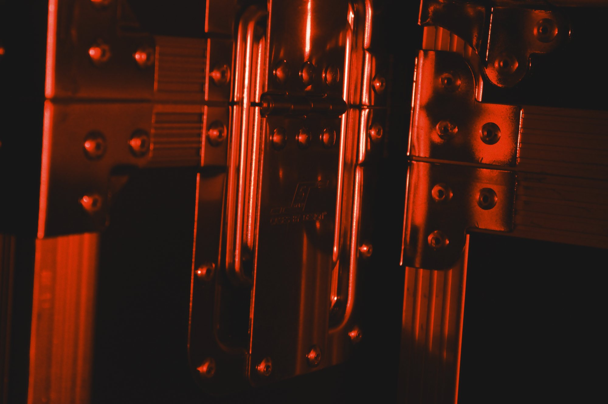

GTF Franzen / Verhuur Prijzen op aanvraag
Verhuur
Een selectie uit onze eigen voorraad. Te huur met of zonder technicus, voor evenementen in Nederland, België en Duitsland.
Prijzen op aanvraag. Stuur ons wat u nodig heeft en voor welke datum, dan krijgt u snel een prijs en advies over wat past.
01Omroep
- Omroephoorns 100VRuim 300 stuks, voornamelijk Philips
- 100V-versterkersVoor omroep over lange afstanden
- Masten en bevestigingVoor hoorns op terrein en parcours
- SpeakermicrofoonsVoor speaker en jury
02Geluid
- d&b audiotechnik E8Fullrange-luidspreker
- Dynacord Cobra 4Top, PWH en FAR, met amprack
- Dynacord Cobra 2Subs met amprack
- Dynacord Madras M18Subwoofer
- Dynacord Madras M15 / M212Fullrange
- Bose 802Compacte luidspreker
- Dynacord M12 / AM12Podiummonitor
- ODIN SF-12A / SF-15ASidefill
- Soundcraft Vi1Digitale mengtafel met glasvezel-stagebox
- Sennheiser draadloosMicrofoons, headsets en antennes
- BSS DI-boxenDI
- Showgear MAT-350Line-array-toren
03Licht
- Infinity Furion S601 / S201Profile moving heads
- Showtec Shark The Meg Beam OneBeam
- Showtec Polar 340 WashFXWash moving head
- Showtec Polar 300 HybridHybride moving head
- Showtec Phantom 3R HybridHybride moving head
- Showtec Phantom Matrix FXEffect
- Helix S5000 Q4 / S4000 Q4Profielspot, met filters en barndoors
- Showtec Performer 3000 LEDTheaterspot
- Infinity TF-300 FresnelFresnel, warm wit
- Infinity IW-1240 / IPW-150Wash en sunpanel
- Showtec Octostrip MKIIPixelbar
- Showtec Sunstrip ActiveRetro-effect
- Stage Blinder FLEX BlazeBlinder
- Eurolite IP PIX Strobe / Spectra StrobeStrobe
- FOS Phantom Bar IP65Bar voor buiten
- Laserworld DS-3000Laser
04Video
- DMT Pixelmesh E12.5LED-panelen voor wanden en schermen
05Effecten
- Antari F-4 FazerHazer
- MagicFX Stage FlameVlameffect
- Showgear SF-250Ventilator
06Truss en rigging
- Milos truss0,5 tot 5 meter
- Single tube2 meter
- Showtec Wind-Up LightstandLichtstatief, 4 meter
- Dynacord FG600Vliegframe
07Data en infra
- GlasvezelOp haspel
- CAT6Op haspel
- Art-Net nodes8 universes
- PixelcontrollersVoor LED en pixelbars
Selectie uit de eigen voorraad · Prijzen op aanvraagPrijs aanvragen

Contact
Uw
Uw
evenement?
Vertel ons wat u van plan bent. U krijgt antwoord van de mensen die het ook gaan bouwen.
info@franzenbocholtz.nl